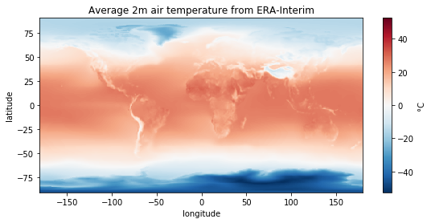

Assignment #05¶
numpy and matplotlib are two fundamental pillars of the scientific python stack. You will find numerous tutorials for both libraries online. I am asking you to learn the basics of both tools by yourself, at the pace that suits you. I can recommend these two tutorials:
They can be quite long if you are new to numpy - I’m not asking to do them all today! Sections 1.4.1.1 to 1.4.1.5 in the numpy tutorial should get you enough information for today’s assignments, or you can try without it and learn on the fly - your choice!
Exercise #05-01: numpy cycles¶
Monthly averages of temperature data at Innsbruck can be downloaded from this lecture’s github via:
from urllib.request import Request, urlopen
import json
# Parse the given url
url = 'https://raw.githubusercontent.com/fmaussion/scientific_programming/master/data/innsbruck_temp.json'
req = urlopen(Request(url)).read()
# Read the data
inn_data = json.loads(req.decode('utf-8'))
(original data obtained from NOAA’s Global Surface Summary of the Day)
Explore the inn_data variable. What is the type of “inn_data”, and of the data it contains? Convert the data series to numpy arrays.
Using numpy/scipy, matplotlib, and the standard library only, compute and plot the mean monthly annual cycle for 1981-2010 and the mean annual temperature timeseries for 1977-2017. Compute the linear trend (using scipy.stats.linregress) of the average annual temperature over 1977-2017. Repeat with winter (DJF) and summer (JJA) trends.
Tip 1: to select part of an array (indexing) based on a condition, you can use the following syntax:
import numpy as np
x = np.arange(10)
y = x**2
y[x > 4] # select y based on the values in x
array([25, 36, 49, 64, 81])
Tip 2: there is more than one way to compute the annual and monthly means. Some use loops, some use reshaping on the original 1D array.
Exercise #05-02: indexing¶
Given a 2D numpy array defined as:
import numpy as np
x = np.array([[1, 2, 3],
[4, 5, 6]])
The following indexing operations all select the same values out of the array:
x[:, 1]x[slice(0, 2, 1), 1]x[(slice(0, 2, 1), 1)]x[slice(0, 2, 1), slice(1, 2, 1)]x[..., 1]x[::1, 1]x[[0, 1], 1]x[:, -2]x[:, 1:2]x[:, [1]]
This can be checked with the following test:
from numpy.testing import assert_equal
ref = 7
assert_equal(ref, x[:, 1].sum())
assert_equal(ref, x[..., 1].sum())
assert_equal(ref, x[::1, 1].sum())
assert_equal(ref, x[slice(0, 2, 1), 1].sum())
assert_equal(ref, x[(slice(0, 2, 1), 1)].sum())
assert_equal(ref, x[slice(0, 2, 1), slice(1, 2, 1)].sum())
assert_equal(ref, x[[0, 1], 1].sum())
assert_equal(ref, x[:, -2].sum())
assert_equal(ref, x[:, 1:2].sum())
assert_equal(ref, x[:, [1]].sum())
Questions:
What is the
...syntax doing? Again, it is the literal equivalent of an actual python object: what is it?some of these indexing operations are truly equivalent to the “obvious” one,
x[:, 1]. List them.Classify these operations (i) in basic and advanced operations, and (ii) by the shape of their output. Explain.
I’d like my array
a = x[:, 1:2]to have a shape of (2, ) like most of the other operations listed above. What can I do to reshape it?
Exercise #05-03: the difference¶
Consider the following example:
a = np.array([1, 2, 3])
b = a
c = a
b = a - 10
c -= 100
What will be the values printed by print(a, b, c) after this code snippet? Explain.
Exercise #05-04: Greenwich¶
ERA-Interim reanalysis provides global atmospheric fields from 1979 to today. Someone prepared a grid of average temperature available here:
from urllib.request import Request, urlopen
from io import BytesIO
import json
# Parse the given url
url = 'https://github.com/fmaussion/scientific_programming/raw/master/data/monthly_temp.npz'
req = urlopen(Request(url)).read()
with np.load(BytesIO(req)) as data:
temp = data['temp']
lon = data['lon']
lat = data['lat']
However, the data is not well processed! The longitudes are ranging from 0 to 360°, thus cutting UK and Africa in half! Reorganize the data and the corresponding coordinate to obtain a plot similar to this one:
Exercise #05-05: ACINN meteorological data¶
The institute website provides raw data from several stations around Innsbruck using a live feed at the following addresses:
http://meteo145.uibk.ac.at/innsbruck/3 for the three days data
http://meteo145.uibk.ac.at/innsbruck/7 for the seven days data
The datasets for the other stations are available, per analogy:
http://meteo145.uibk.ac.at/ellboegen/3
http://meteo145.uibk.ac.at/obergurgl/3
http://meteo145.uibk.ac.at/sattelberg/3
The data is shared by ACINN under a Creative Commons Attribution-ShareAlike 4.0 International License.

The data is provided in the json format, often used for web applications. Fortunately, this is very easy to read in python:
from urllib.request import Request, urlopen
import json
url = 'http://meteo145.uibk.ac.at/innsbruck/3'
# Parse the given url
req = urlopen(Request(url)).read()
# Read the data
data = json.loads(req.decode('utf-8'))
---------------------------------------------------------------------------
OSError Traceback (most recent call last)
~/.pyenv/versions/3.8.5/lib/python3.8/urllib/request.py in do_open(self, http_class, req, **http_conn_args)
1349 try:
-> 1350 h.request(req.get_method(), req.selector, req.data, headers,
1351 encode_chunked=req.has_header('Transfer-encoding'))
~/.pyenv/versions/3.8.5/lib/python3.8/http/client.py in request(self, method, url, body, headers, encode_chunked)
1254 """Send a complete request to the server."""
-> 1255 self._send_request(method, url, body, headers, encode_chunked)
1256
~/.pyenv/versions/3.8.5/lib/python3.8/http/client.py in _send_request(self, method, url, body, headers, encode_chunked)
1300 body = _encode(body, 'body')
-> 1301 self.endheaders(body, encode_chunked=encode_chunked)
1302
~/.pyenv/versions/3.8.5/lib/python3.8/http/client.py in endheaders(self, message_body, encode_chunked)
1249 raise CannotSendHeader()
-> 1250 self._send_output(message_body, encode_chunked=encode_chunked)
1251
~/.pyenv/versions/3.8.5/lib/python3.8/http/client.py in _send_output(self, message_body, encode_chunked)
1009 del self._buffer[:]
-> 1010 self.send(msg)
1011
~/.pyenv/versions/3.8.5/lib/python3.8/http/client.py in send(self, data)
949 if self.auto_open:
--> 950 self.connect()
951 else:
~/.pyenv/versions/3.8.5/lib/python3.8/http/client.py in connect(self)
920 """Connect to the host and port specified in __init__."""
--> 921 self.sock = self._create_connection(
922 (self.host,self.port), self.timeout, self.source_address)
~/.pyenv/versions/3.8.5/lib/python3.8/socket.py in create_connection(address, timeout, source_address)
807 try:
--> 808 raise err
809 finally:
~/.pyenv/versions/3.8.5/lib/python3.8/socket.py in create_connection(address, timeout, source_address)
795 sock.bind(source_address)
--> 796 sock.connect(sa)
797 # Break explicitly a reference cycle
OSError: [Errno 113] No route to host
During handling of the above exception, another exception occurred:
URLError Traceback (most recent call last)
<ipython-input-7-5b3bde158463> in <module>
4 url = 'http://meteo145.uibk.ac.at/innsbruck/3'
5 # Parse the given url
----> 6 req = urlopen(Request(url)).read()
7 # Read the data
8 data = json.loads(req.decode('utf-8'))
~/.pyenv/versions/3.8.5/lib/python3.8/urllib/request.py in urlopen(url, data, timeout, cafile, capath, cadefault, context)
220 else:
221 opener = _opener
--> 222 return opener.open(url, data, timeout)
223
224 def install_opener(opener):
~/.pyenv/versions/3.8.5/lib/python3.8/urllib/request.py in open(self, fullurl, data, timeout)
523
524 sys.audit('urllib.Request', req.full_url, req.data, req.headers, req.get_method())
--> 525 response = self._open(req, data)
526
527 # post-process response
~/.pyenv/versions/3.8.5/lib/python3.8/urllib/request.py in _open(self, req, data)
540
541 protocol = req.type
--> 542 result = self._call_chain(self.handle_open, protocol, protocol +
543 '_open', req)
544 if result:
~/.pyenv/versions/3.8.5/lib/python3.8/urllib/request.py in _call_chain(self, chain, kind, meth_name, *args)
500 for handler in handlers:
501 func = getattr(handler, meth_name)
--> 502 result = func(*args)
503 if result is not None:
504 return result
~/.pyenv/versions/3.8.5/lib/python3.8/urllib/request.py in http_open(self, req)
1377
1378 def http_open(self, req):
-> 1379 return self.do_open(http.client.HTTPConnection, req)
1380
1381 http_request = AbstractHTTPHandler.do_request_
~/.pyenv/versions/3.8.5/lib/python3.8/urllib/request.py in do_open(self, http_class, req, **http_conn_args)
1351 encode_chunked=req.has_header('Transfer-encoding'))
1352 except OSError as err: # timeout error
-> 1353 raise URLError(err)
1354 r = h.getresponse()
1355 except:
URLError: <urlopen error [Errno 113] No route to host>
Now I will help you to parse the timestamp of the data:
from datetime import datetime, timedelta
data['time'] = [datetime(1970, 1, 1) + timedelta(milliseconds=ds) for ds in data['datumsec']]
---------------------------------------------------------------------------
KeyError Traceback (most recent call last)
<ipython-input-8-5eaac4f8344c> in <module>
1 from datetime import datetime, timedelta
----> 2 data['time'] = [datetime(1970, 1, 1) + timedelta(milliseconds=ds) for ds in data['datumsec']]
~/.pyenv/versions/3.8.5/envs/book/lib/python3.8/site-packages/numpy/lib/npyio.py in __getitem__(self, key)
257 return self.zip.read(key)
258 else:
--> 259 raise KeyError("%s is not a file in the archive" % key)
260
261
KeyError: 'datumsec is not a file in the archive'
And make a first plot to get you started:
%matplotlib inline
import matplotlib.pyplot as plt
plt.plot(data['time'], data['dd'], '.');
plt.ylabel('Wind direction (°)');
plt.title('Wind direction at Innsbruck');
---------------------------------------------------------------------------
KeyError Traceback (most recent call last)
<ipython-input-9-369920b134c4> in <module>
1 get_ipython().run_line_magic('matplotlib', 'inline')
2 import matplotlib.pyplot as plt
----> 3 plt.plot(data['time'], data['dd'], '.');
4 plt.ylabel('Wind direction (°)');
5 plt.title('Wind direction at Innsbruck');
~/.pyenv/versions/3.8.5/envs/book/lib/python3.8/site-packages/numpy/lib/npyio.py in __getitem__(self, key)
257 return self.zip.read(key)
258 else:
--> 259 raise KeyError("%s is not a file in the archive" % key)
260
261
KeyError: 'time is not a file in the archive'
You will get much more time to get used to these data in the mid-semester projects. For today, I’m asking to write a script that takes the station and number of days as input (either as command line arguments or user input, your choice) and prints the following information in the terminal:
At station XXX, over the last X days, the dominant wind direction was XX (xx% of the time).
The second most dominant wind direction was XX (xx% of the time), the least dominant wind
direction was XX (xx% of the time). The maximum wind speed was XX m/s (DATE and TIME),
while the strongest wind speed averaged over an hour was XX m/s (DATE and TIME).
With the wind directions being of 8 classes: N, NW, W, SW, S, SE, E, NE.